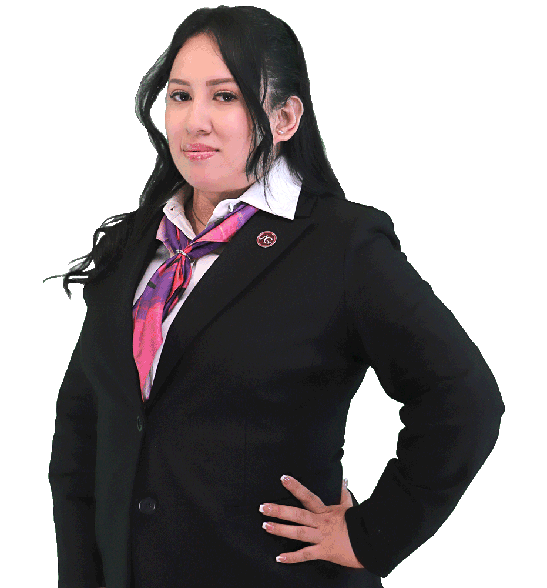

Paola
Hernández Jaime
paola.hernandez@arochgreenyasociados.com
AROCH, GREEN & ASOCIADOS. Abogada Postulante. Litigio y Asesoría Jurídica en el ramo Penal, Mercantil, Civil, Amparo, Constitucional. Enero de 2024 a la fecha.
Formación académica
- 2025 INSTITUTO DE ESTUDIOS Y CAPACITACIÓN JURÍDICA. Especialidad en Audiencias Orales.
- 2025 INSTITUTO NACIONAL DE CIENCIAS PENALES. Maestría en Amparo Penal. Maestrando.
- 2022-2024 FACULTAD DE DERECHO DE LA BARRA NACIONAL DE ABOGADOS. Maestría en Ciencias Penales y Criminalística.
- 2019-2022 FACULTAD DE DERECHO DE LA BARRA NACIONAL DE ABOGADOS. Licenciatura.
Estudios adicionales
- Curso Técnicas de Litigación. Dr. Iván del Llano Granados.
- Taller práctico en Juicio Oral. INDECAJ CAPACITACION JURIDICA.
- Diplomado Nuevo Código Nacional de Procedimientos Civiles y Familiares. HC Capacitación Integral.
- Diplomado Derechos Humanos. Aproximaciones para su Defensa. SCJN.
- Diplomado sobre Juicio de Amparo. SCJN.
- Curso avanzado en interrogatorio, contrainterrogatorio, objeciones, e incorporación de evidencias en audiencias iniciales y juicio oral.
- Audiencia Intermedia. Centro de Capacitación y Actualización.
- Carpeta de Investigación, Centro de Capacitación y Actualización.
- Curso Sentencia de amparo, cumplimiento y ejecución, Centro de Capacitación y Actualización.
- Congreso Iberoamericano y Europeo de Derecho del Trabajo y Seguridad Social. Escuela Judicial Electoral.
- VII Taller virtual de Redacción de Sentencias. Escuela de la Judicial Electoral.
- Curso-Taller en línea de Técnicas, Habilidades y Destrezas en Litigación Oral. Abaroli México.
- Simposium Internacional SPA, OASIS.
- Curso-Taller de Mediación y Negociación online. Abaroli México.
- Curso de Investigación Criminal online. Abaroli México.
- Participación a nivel local y regional en el VII Concurso Nacional de Litigación Oral. Abaroli México.
- Participación en el XI Encuentro Universitario con el Poder Judicial de la Federación.
- Diversos Seminarios de Practica Forense. Facultad de Derecho de la Barra Nacional de Abogados.